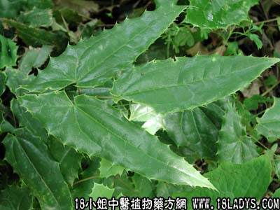

【中药概述】
淫羊藿为小檗科草本植物淫羊藿的地上部分。辛、甘，温。归肝、肾经。
1．温肾壮阳：用于肾阳虚的阳痿、腰膝酸软等，常配熟地，仙茅，肉苁蓉，枸杞子，巴戟天，潼蒺藜，山萸肉，锁阳，阳起石等，或单用浸酒。
2．祛除寒湿：用于风湿痹痛、肢体麻木、拘挛，或兼见筋骨痿软等，常配威灵仙，肉桂，附子，川芎，独活，续断等，或单用浸酒。如（<圣惠方>仙灵脾散）。
3．平喘：用于阳虚喘咳之证。
【药效鉴别】
1．从淫羊藿性味论其功用。缪希雍：“淫羊藿，其味辛甘，其气温而无毒。《本经》言寒者，误也。为补命门要药。辛以润肾，甘温益阳气，故主阴痿绝伤，益气力，强志。茎中痛者，肝肾
虚也，补益二经，痛自止矣。膀胱者州都之官，津液藏焉，气化则能出矣。辛以润其燥，甘温益阳气以助其化，故利小便也。肝主筋，肾主骨，益肾肝则筋骨自坚矣。辛能散结，甘能缓中，
温能通气行血，故主瘰疬赤痈及下部有疮，洗出虫。”(《本草经疏》)
2．论淫羊藿补肾助阳之功①刘若金：“淫羊藿，《本经》首主阴痿绝伤，《日华子》亦首言其疗男子绝阳，女子绝阴，则谓入命门、补真阳者是也。盖命门为肾中之真阳，即人身之元气也，
其所谓绝阳绝阴，不本之元气，何以嘘之于既槁。所谓益气力，强志，并治冷气劳气，筋骨挛急等证，皆其助元气之故。至若茎中痛，小便不利，皆肝肾气虚所致，此味入肾而助元阳，即是
补肾气，而肝肾固同一治也。老人昏耄，中年健忘，皆元阳衰败而不能上升者也。须知此味以降为主，其升由于能降也。”(《本草述》)；②清代太医院：“夫男女虽分阴阳，而五脏七腑正
各相同，男子命门寒则不举，女子命门寒则阳不纳，非男子绝阳不能生，女子绝阳尚可产也。淫羊藿补阳不补阴，取其补男女之阳，则彼此之化生不息。阴中有阳，则男子精热而能施，女子
亦精热而能受。况妇人用之，又不止温补命门，尤定小腹之捅，去阴门之痒，暖子宫之寒，止白带之湿。”(《药性通考》)
3．辩淫羊藿治偏风不遂。张山雷：“《日华》主丈夫绝阳，女子决阴，一切冷风牢气，筋骨挛急，四肢不仁，补腰膝，则辛温之品，固不独益肾壮阳，并能通行经络，祛除风寒湿痹。”“石顽谓一味仙灵脾酒，为偏风不遂要药仙灵脾酒，止可治风寒湿痹之不遂，并不能治气血两虚之不遂，而血冲脑经之不遂，更万万不可误用。”（《本草正义》）
【药理作用】
1. 雄性激素样作用：流浸膏对狗有促进精液分泌作用，以叶和根的作用最强，果实次之，茎部弱。给药后可增加小鼠前列腺、精囊、提肛肌的重量，证明淫羊藿具有雄性激素样作用。
2. 对心血管系统的作用：淫羊藿煎剂及提取物对小鼠、大鼠、豚鼠、离体和在位兔心、麻醉狗等均分别显示有增加冠脉流量、耐缺氧、保护心肌缺血、降压等作用。黄酮类化合物是主要活性成分。
3. 对免疫功能的影响：淫羊藿的70％甲醇提取物200mg／Kg或500mg／Kg灌胃，可增强网状内皮系统的吞噬能力，使小鼠碳粒廓清速率加速。
4. 促进骨质生长：淫羊藿注射液在试管内对鸡胚骨的生长和鸡胚股骨蛋白多糖的合成有明显促进作用。淫羊藿提取物能抑制大鼠去睾丸后的骨吸收，其多糖能使小鼠骨髓细胞增殖。
另外，尚有抗衰老、抗疲劳、抗病毒等作用。
【应用与配伍】
1. 用于肾阳虚的阳痿，不孕及尿频等证。有温肾壮阳、益精起痿之效。可单味浸酒服，如《食医心镜》淫羊藿酒；亦可配伍熟地、枸杞子、巴戟天等同用，如赞育丸。
2. 用于肝肾不足的筋骨痹痛，风湿拘挛麻木等证。能补肝肾，强筋骨，祛风湿。治肢体麻木拘挛，可单用浸酒服；兼见筋骨痿软，步履艰难者，可配杜仲、巴戟天、桑寄生等同用。
此外，现代用于肾阳虚的喘咳及妇女更年期的高血压等，亦有较好疗效。
【化学成分】含淫羊藿甙、淫羊藿次甙等，朝鲜淫羊藿含淫羊藿甙、淫羊藿新甙A、B、C、D、E等。箭叶淫羊藿含淫羊藿甙、脱水淫羊藿甙元-3-O-α-鼠李糖甙，淫羊藿甙元-3-O-α-鼠李糖甙，槲皮素等。
【用量用法】
10——15g，水煎服。
【使用注意】
阴虚火旺者不宜。
【注】
羊脂炙淫羊藿：性温，偏于温燥。对肾阳衰微，阳气不足的患者用之无伤阴之虑，且可久用。增强其温肾助阳作用。1.肾虚阳痿。2.宫冷不孕。